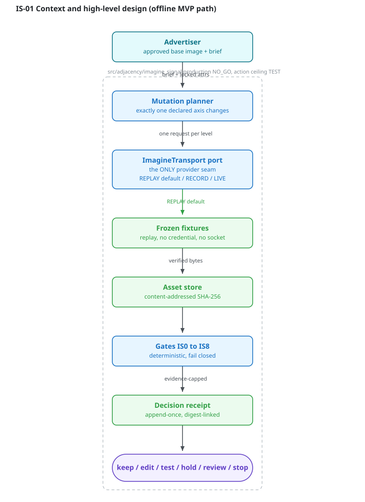
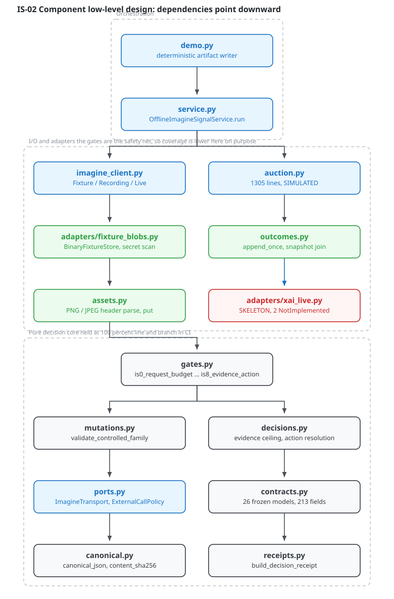
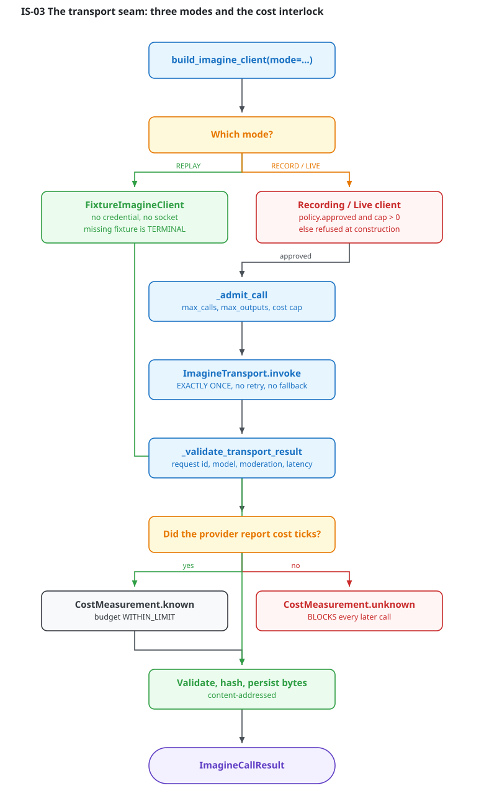
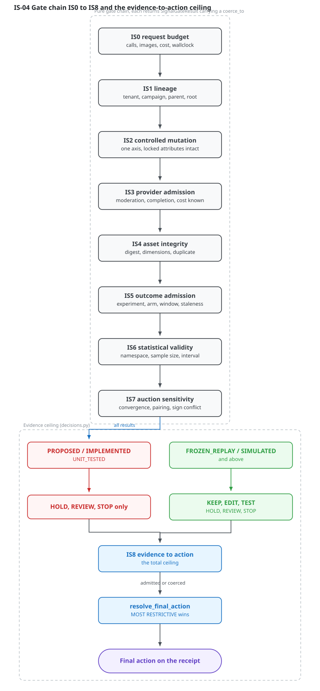
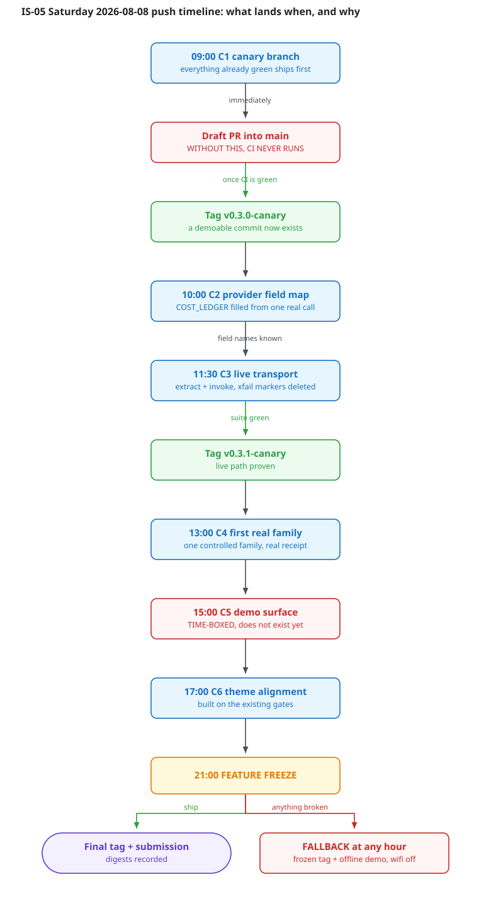

Controlled creative mutation for ad imagery, with the evidence discipline enforced in
code. Offline MVP, production NO_GO, action ceiling TEST. Written 2026-08-05 against
main at cd218dd.
An advertiser has one approved ad image. The obvious move is to generate fifty more. You then have fifty images and no idea which difference mattered, what it cost, or whether you are allowed to say anything about it.
ImagineSignal builds a small family in which exactly one declared visual choice changes at a time, with product, logo, composition and text locked and verified byte-identical. It records lineage and actual cost, joins clearly labeled outcome evidence, and passes every conclusion through nine deterministic gates before recommending anything.
The output is not an image. It is a decision receipt: keep, edit, test, hold, review, or stop, with the evidence class that justified it attached.

Base Adjacency (gates G0 to G6) is untouched. ImagineSignal is isolated
under src/adjacency/imagine_signal/ with gates IS0 to IS8 and
its own canonical hashing, so its contracts can evolve without moving existing hash vectors.

The entire provider integration is one Protocol with one method:
class ImagineTransport(Protocol):
def invoke(self, *, operation, request) -> TransportResult: ...
| Property | Why it is built that way |
|---|---|
| Replay is the default | No credential, no socket. The business logic is testable without a network or a bill. |
| A missing fixture is terminal | A fallback from replay to a live call is how you get a surprise bill and an unreproducible result. |
| One invocation per call | Retries hide provider state and multiply spend exactly when you can least reason about it. |
| Unknown cost blocks spending | Zero is a reported value, never a default. This is what makes it safe to leave running unattended. |
| Ambiguous outcome is typed | ProviderOutcomeUnknownError carries the provider request id, so reconciliation is possible. |

| Evidence class | Actions admitted |
|---|---|
| PROPOSED IMPLEMENTED UNIT_TESTED | HOLD, REVIEW, STOP |
| FROZEN_REPLAY SIMULATED and above | KEEP, EDIT, TEST, HOLD, REVIEW, STOP |
Restrictiveness ordering is total:
TEST(0) < EDIT(1) < KEEP(2) < HOLD(3) < REVIEW(4) < STOP(5). One failed gate can
only make the outcome stricter, never looser.
TEST.The offline path, with real line anchors from service.py:
OfflineImagineSignalService.run service.py:299
load frozen outcome fixture, compute request hash service.py:302
idempotency check under a lock service.py:304
_execute
validate request contracts service.py:324
replay assets, collect IS1 / IS3 / IS4 groups service.py:325
append outcomes once, admit via IS5 service.py:328
estimate signals per context, admit via IS6 service.py:346
run auction scenario, admit via IS7 service.py:361
IS2 controlled mutation, IS0 request budget service.py:369
build_signal_decision (recomputes IS8 itself) service.py:402
resolve_final_action (most restrictive wins) decisions.py:74
build_decision_receipt (append-once, digest) service.py:422service.py:338), and a regression test asserts
an unexpected experiment now forces HOLD. A self-comparison always passes and never
throws, so only a test that supplies the wrong experiment catches it.| Crosses the port | Never crosses |
|---|---|
A validated ImagineRequest | A credential. ports.py has no credential lookup at all. |
A typed TransportResult | Raw base64 or a signed URL into any log, fixture, or artifact. |
| Decoded bytes, immediately hashed | A provider URL as the only record of an asset. |
| Exact cost ticks, or an explicit unknown | An inferred or estimated cost. |
| Condition | Behavior |
|---|---|
| Fixture miss | BinaryFixtureMissError. Terminal. No live fallback. |
| Moderation rejection | Terminal for that output. Recorded, never reworded. |
| Provider outcome ambiguous | UNKNOWN result, unknown cost, spending blocked. |
| Cost unreported | Explicit unknown. Next external call refused until reconciled. |
| Digest or dimension mismatch | IS4 fails, coerces to STOP. |
| Experiment or arm mismatch | IS5 fails, coerces to HOLD. |
| Idempotency key reused with different input | SERVICE_IDEMPOTENCY_CONFLICT. |

app.py
launches only the base Adjacency Autopsy demo and ui.py never imports
imagine_signal. It is scheduled as a time-boxed task with a hard 17:00 stop, and the
Autopsy demo is the verified fallback.